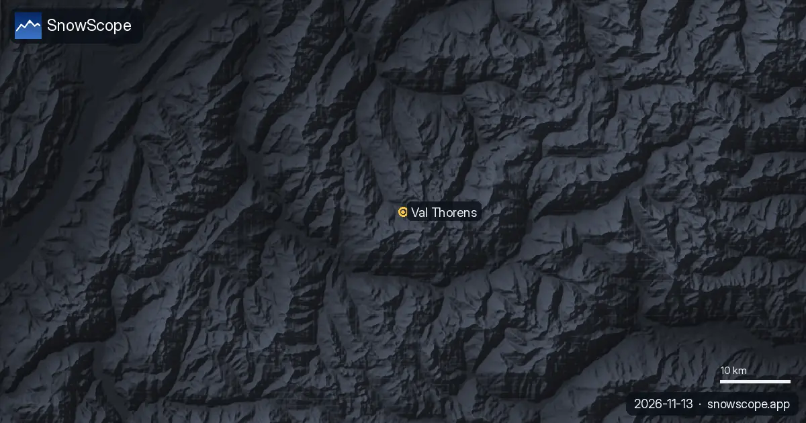
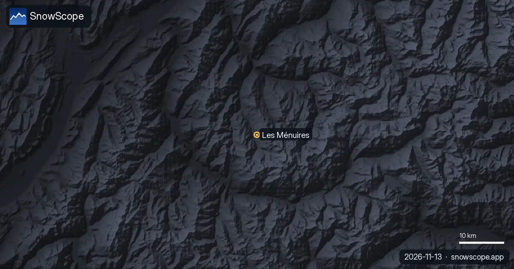
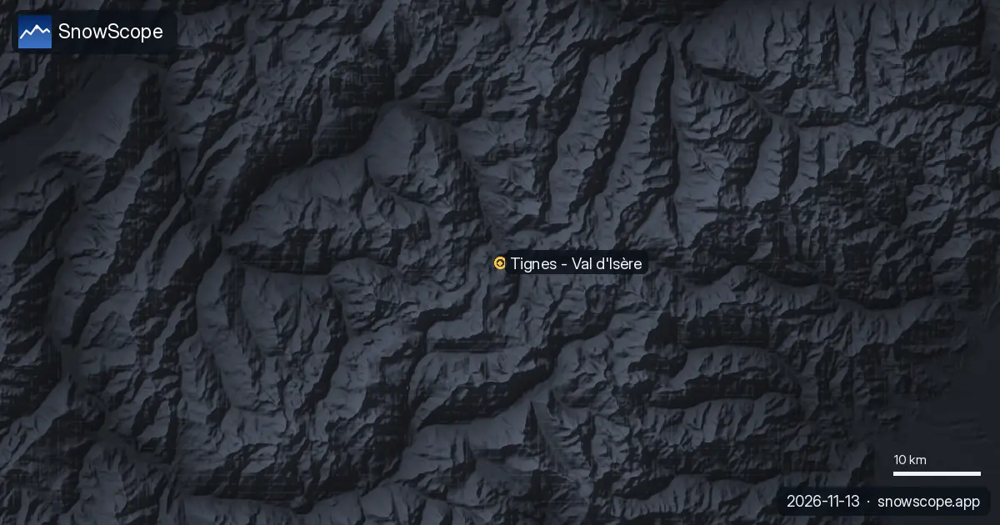
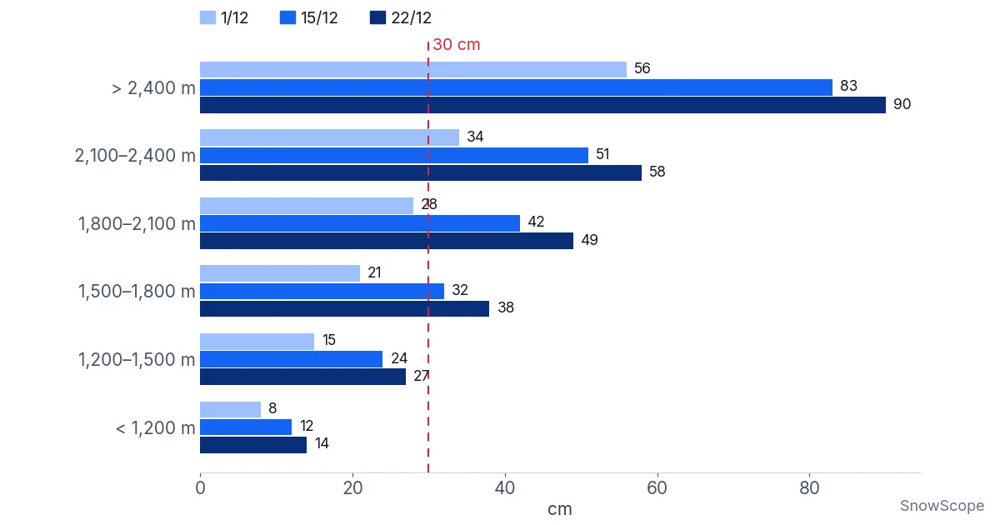
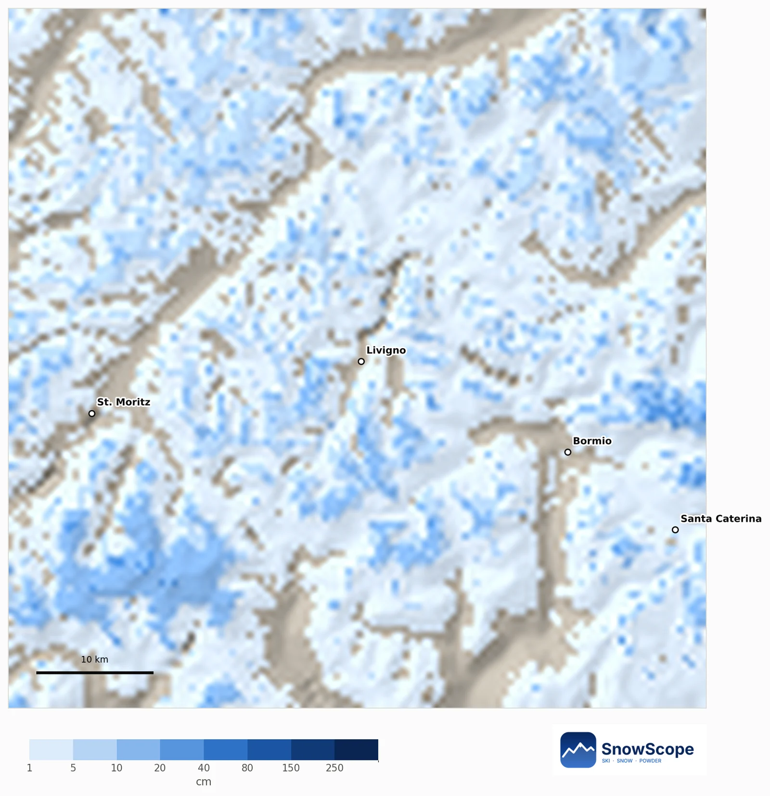
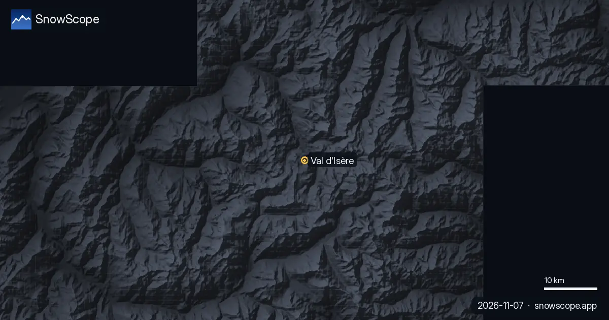
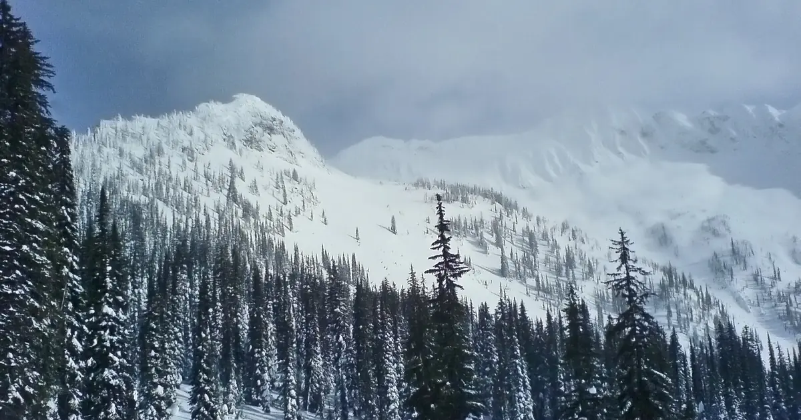
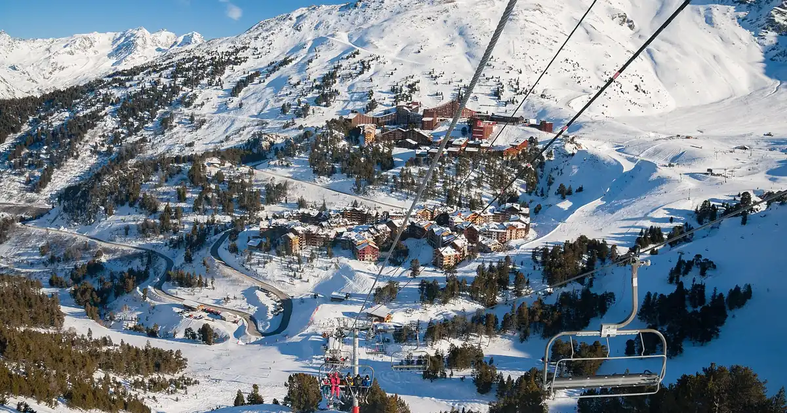
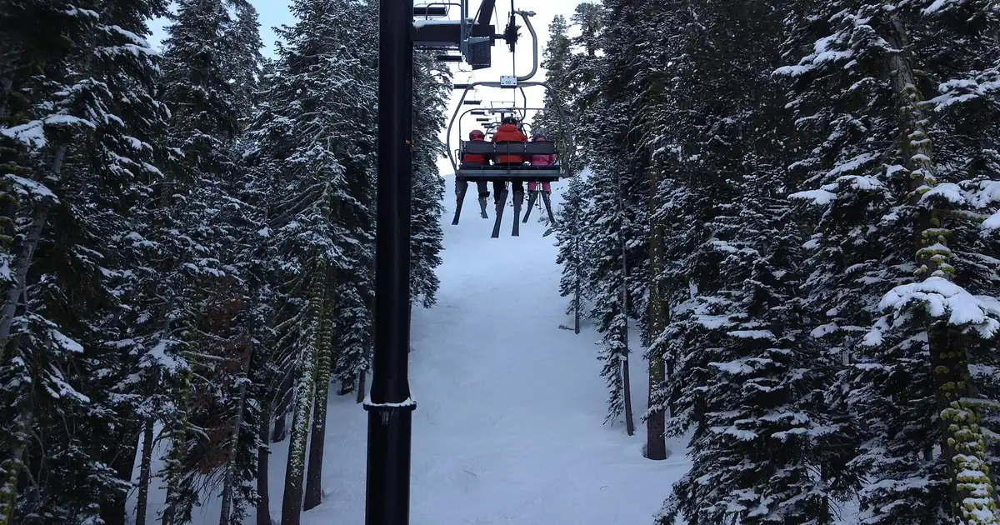

Schneeberichte · Ratgeber
Tägliche Schneeberichte für Skifahrer: wo der Schnee liegt, was kommt und wo du fahren kannst, aus der SnowScope-Schneekarte und Messstationen. Jede Zahl stammt aus den Daten des Tages.

Bei Monterosa Ski kostet der Tagespass online 40,00 bis 71,00 EUR. Im Dezember liegt der Schnee oben: üblich 124 cm auf 3.030 m, 6 cm auf 1.207 m.

Bei Wolf Creek kostet das Erwachsenenticket für die Saison 2026-2027 an normalen Tagen 96 $ und an Spitzentagen 110 $; auf halber Höhe lagen an einem typischen 15. Dezember 34 in (87 cm) Schnee.

Fellhorn/Kanzelwand im Dezember: 63 cm am Gipfel (1965 m) an einem typischen 15. Dezember, 10 cm im Tal; 6-Tage-Skipass im Advent 344,50 EUR bis 20. Dezember.

Plane deinen Dezember-Trip 2026 nach Les Orres, indem du die wöchentlichen Skipasspreise mit unserer Schneehistorie aus 46 vergangenen Wintern vergleichst.

Hemavan im Dezember: 82 cm an der Mittelstation an einem typischen 15. Dezember, jeder Winter mit 30 cm Mitte Dezember; der tiefste Dezember unserer Nordic-Auswahl.

Tageskarten in Brighton starten für 2026/27 bei 72 $, wenn man früh kauft. Auf halber Höhe liegen am 15. Dezember meist 37 in (94 cm) Schnee, gegenüber 25 in (64 cm) in Park City.

Vergleiche Grandvalira und spanische Skigebiete im Dezember 2026 bezüglich Schneehöhen, Lift-Höhen und Preisen ab 49,00 EUR.

Pitztaler Gletscher im Dezember: 87 cm an der Mittelstation an einem typischen 15. Dezember, mehr Dezemberschnee als in den 1980ern; Tageskarte 77 EUR, 6 Tage 410 EUR.

16 preisgünstige US-Skigebiete, eingestuft nach den Dezember-Schneechancen aus 46 vergangenen Wintern, mit den geprüften Tagespreisen: von 49 $ unter der Woche bis 125 $ und mehr.

Für eine günstige Skiwoche mit der Familie im Dezember in Astún-Candanchú solltest du Ende Dezember anpeilen, wenn die oberen Pisten in 67 % der vergangenen Winter guten Schnee haben.

Deutschland im Dezember: Zugspitze und Fellhorn-Gipfel hatten Mitte Dezember in mindestens 9 von 10 Wintern 30 cm; Sudelfeld, Brauneck und Feldberg nur selten.

Puy-Saint-Vincent bietet einen 44 EUR Erwachsenen-Tagespass und soliden Dezember-Schnee in der Höhe, hier im Vergleich zum großen Nachbarn Serre Chevalier.

In all unseren 46 vergangenen Wintern lagen an Grand Targhees Mittelstation am 15. Dezember mindestens 20 in (50 cm) Schnee. Das Online-Tagesticket kostet je nach Datum 125 $ bis 180 $.

Oppdal im Dezember: 60 cm an der Talstation (585 m) an einem typischen 15. Dezember, 93 % der Winter mit 30 cm Mitte Dezember – besser als Trysils Tal.

Grimentz-Zinal bietet 71 km Pisten und verlässlichen Schneesicherheit in großer Höhe für Ihre Dezember-Reise, mit 6-Tages-Pässen für CHF 339,00.

Österreich vor Weihnachten: Galtür 258 EUR und Kühtai 269 EUR für 6 Tage, mit 30 cm in über 90 % der Winter; Gletscher kosten mehr, kleine Hügel sind ein Risiko.

Planst du eine Reise nach Baqueira Beret im Dezember? Sieh dir unsere Schnee-Historie an, Ticketpreise ab 70,00 € für einen Tag und den Vergleich zu Astún-Candanchú.

Wir bewerten französische Skigebiete nach der Schneewahrscheinlichkeit im Dezember und den Skipasspreisen, beginnend bei 36,00 EUR für einen Tagespass für Erwachsene in Les Karellis.

In Oukaïmeden gibt der Dezember 18 cm auf Mittelstationshöhe in einem typischen Monat, gegen 44 cm im Februar und 53 cm im März. Was 46 Winter über den richtigen Skimonat sagen.


Galtür im Dezember: 55 cm an der Mittelstation an einem typischen 15. Dezember, 93 % der Winter mit 30 cm Mitte Dezember; Tageskarte Nebensaison 55,50 EUR bis 18. Dezember.

Geilo im Dezember: 57 cm an der Mittelstation an einem typischen 15. Dezember, 96 % der Winter mit 30 cm Mitte Dezember; Tageskarte ab 590 NOK (rund 56 EUR).

Grandvalira wird oft als günstiges Skigebiet für Dezember verkauft, doch der Naturschnee an der Talstation liegt in den vergangenen Wintern im Schnitt bei nur 9 cm.

Hemsedal im Dezember: 70 cm an der Mittelstation und 106 cm am Gipfel an einem typischen 15. Dezember, aber 32 cm im Tal; Geilo nebenan ab 590 NOK pro Tag.

Hintertuxer Gletscher im Dezember: 98 cm auf 3245 m und 52 cm an der Mittelstation an einem typischen 15. Dezember; Tageskarte 82 EUR, 6 Tage 399 EUR.

Vergleiche die Schneechancen im Dezember und geprüfte Skipasspreise ab 40,00 EUR in italienischen Skigebieten für deinen Wochenendtrip mit dem Auto.

Skifahren in Kühtai im Dezember: 60 cm an der Talstation (1939 m) an einem typischen 15. Dezember, 6-Tage-Skipass in der Nebensaison 269 EUR bis 18. Dezember.

Les 2 Alpes reicht bis auf 3.511 m für viel Schnee im Dezember 2026, mit einem 6-Tage-Skipass für Erwachsene für 266,50 EUR.

Les Karellis bietet 45 km Pisten und einen 6-Tage-Skipass für Erwachsene für 191,00 EUR mit einer 98 %igen Schneewahrscheinlichkeit auf mittlerer Höhe Ende Dezember.

Levi im Dezember: 38 cm an einem typischen 15. Dezember, 91 % der Winter mit 30 cm in der Weihnachtswoche, mehr Dezemberschnee als früher; Tageskarte 60 EUR, online 57 EUR.

Fahr Ski in Livigno für 51,50 EUR pro Tag vor dem 18. Dezember, wenn der Schnee am Gipfel in 100 % der vergangenen Winter 30 cm erreicht.

In Michlifen haben 89 % der Winter am 15. Dezember fast keinen Schnee (unter 5 cm). Was 46 Winter über Skifahren im Mittleren Atlas im Dezember sagen.

Montgenèvre hat im Dezember üblicherweise 56 cm Schnee an der Talstation und bietet Wochenendfahrern damit eine bessere Schneelage als Sestriere auf der anderen Seite der Grenze.

Skifahren in Obertauern im Dezember: 43 cm an einem typischen 15. Dezember an der Mittelstation, 6-Tage-Skipass vor Weihnachten 331 EUR.

Oukaïmeden Mitte Dezember: 16 cm auf Mittelstationshöhe in einem typischen Winter, 50 cm oder mehr in nur 11 % der Winter. Datum für Datum, was 46 Winter sagen.

Oukaïmeden liegt 50 km Luftlinie von Marrakesch entfernt. Wie ein Dezember-Skiwochenende gelingt: wann man fährt, wie die Schneechancen stehen, was man über die Preise weiß.

Les 3 Vallées: 75,70 € pro Tag vom 5. bis 18. Dezember 2026. Oukaïmeden: kein offizieller Online-Tarif, 16 cm auf Mittelstationshöhe Mitte Dezember. Der ehrliche Vergleich.

Pila oberhalb von Aosta bietet einen günstigen Tagesskipass für 60,00 EUR und zuverlässigen Schnee im Dezember auf den oberen Pisten.

Die Lifte in Saas-Fee erreichen 3.556 m, wo unsere Schnee-Historie zeigt, dass 100 % der vergangenen Winter bis Mitte Dezember mindestens 30 cm Schnee hatten.

12 nordische Skigebiete im Dezember: Hemavan, Hemsedal und Geilo hatten Mitte Dezember in 96-100 % der Winter 30 cm an der Mittelstation; Tageskarten in Finnland 58-60 EUR.

Dezember-Schneechancen aus 46 Wintern und geprüfte Tagespreise: Ski Cooper 49 $, Les 3 Vallées 75,70 €, Oukaïmeden ohne offiziellen Tarif. Wo ein günstiger Dezember-Skitag funktioniert.

Entdecke die ruhigen Pisten von St-Luc Chandolin, wo die Schneehöhe auf mittlerer Höhe in 98 % der Winter Ende Dezember 30 cm erreicht.

Trysil im Dezember: 44 cm an der Mittelstation an einem typischen 15. Dezember, 83 % der Winter mit 30 cm Mitte Dezember; die Preise sind dynamisch, also früh buchen.

Valloire-Valmeinier bietet 131 km Pisten und eine 98 % Chance auf 30 cm Schnee auf halber Höhe bis Mitte Dezember.

Zugspitze im Dezember: 122 cm auf 2627 m an einem typischen 15. Dezember, Tageskarte online 70,50 EUR; Garmisch-Classic darunter 69 EUR mit deutlich weniger Schnee.

Mölltaler Gletscher im Dezember: 66 cm am tiefsten Lift (2103 m) und 128 cm an der Mittelstation an einem typischen 15. Dezember; 6-Tage-Skipass Nebensaison 332 EUR.

Mt. Baker im Dezember: 46 in (116 cm) Schnee auf halber Höhe an einem typischen 15. Dezember, und ein 98,80-$-Ticket von Montag bis Donnerstag, das es nur am Tag selbst an der Kasse gibt.

Kannst du dich als vorsichtiger Anfänger im Dezember auf Courmayeur verlassen, wenn es auf halber Höhe in unseren vergangenen Wintern im Schnitt 60 cm Schnee gibt?

Åre im Dezember: 40 cm an der Mittelstation an einem typischen 15. Dezember, 89 % der Winter mit 30 cm Mitte Dezember, aber oben ein starker Rückgang seit den 1980ern.

Skibedingungen in Deer Valley am 13. November 2026: noch kein richtiger Schnee am Boden, rund 4 in nahe dem Gipfel durch den Sturm am Wochenende, Regen auf der tiefen East-Village-Seite unter etwa 6,700 bis 7,600 ft und 11 in oben über die Woche.

Neuschneevorhersage für Park City (Utah) am 13. November 2026: im Moment kaum Schnee am Boden, rund 5 in nahe dem Gipfel durch den Sturm am Wochenende bei einer Schneefallgrenze von 7,400 bis 7,700 ft, Regen unten und rund 12 in oben über die Woche.

Schneevorhersage für Alpental am 13. November 2026: etwa 1 in am oberen Berg, am Wochenende Regen fast bis zum Gipfel bei einer Schneefallgrenze von 5,400 bis 5,600 ft, nächste Woche oben 4 bis 5 in Regen und Schnee gemischt.

Schnee-Check für Bogus Basin am 13. November 2026: noch kein Schnee am Boden, am Wochenende Regen und nasser Schnee mit einer Schneefallgrenze bei 6,300 bis 6,800 ft, danach kältere Luft und rund 8 in am Gipfel bis nächste Woche.

Der Pistenplan von Sillian (Hochpustertal) mit unserer Schneeschicht am 13. November 2026: 8,6 cm am Gipfel auf 2399 m, untere Hänge aper, und eine Woche mit Regen und Schnee gemischt, Schneefallgrenze bei 1.800 bis 2.000 m.

Schneelage in Silvretta Montafon am 13. November 2026: 4,5 cm am Gipfel auf 2421 m, Mittelstation und Tal noch aper, diese Woche rund 40 cm in der Höhe, im Tal Regen unter 1.500 m.

Schneebericht Lech Zürs am 13. November 2026: rund 6 cm oben (2436 m) und an der Mittelstation, aper in Lech auf 1430 m. Diese Woche oben 42 cm nach unserer Prognose, bis 91 cm nach anderen, Regen und Schnee gemischt um 1400 m. Und warum Lech die schneereiche Seite des Arlbergs ist.

Schneehöhe in St. Anton am Arlberg am 13. November 2026: rund 1 cm oben (2642 m), 5 cm an der Mittelstation, aper im Ort. Diese Woche 42 cm oben und 33 cm an der Mittelstation, Regen unter etwa 1480 m. Wie viel Schnee die steilen Hänge brauchen.

Schneebericht Obergurgl am 13. November 2026: rund 20 cm oben (3024 m), 5 cm an der Mittelstation, schneefrei an den untersten Liften (1784 m). Schneeprognose der Woche: 34 cm oben, 21 cm unten, Schneefallgrenze um 1700 m. Dazu der übliche Saisonstart.

Die Schneehöhe in Sölden am 13. November 2026: rund 9 cm oben auf 3245 m, 5 cm an der Mittelstation, nichts im Tal auf 1346 m. Diese Woche 25 cm oben, Regen unter etwa 1620 m. Gletscher gegen Dorf, dazu 46 vergangene Winter.

Schneefall in Val Thorens, 13. November 2026: 27 cm am Gipfel (3175 m) und 17 cm auf 2498 m in sieben Tagen; die Schneehöhe beträgt 50 cm und 8 cm. Nächste sieben Tage: 86 cm am Gipfel, 73 cm auf 2498 m, Schneefallgrenze weit unter dem Dorf. Die übliche Saison aus 46 Wintern.

Die Schneehöhe in Chamonix am 13. November 2026, Höhe für Höhe: nichts im Talboden, 1 cm auf 2001 m, 12 cm oben am Brévent-Flégère (2486 m), 5 bis 24 cm oben an den Grands Montets (2768 m). Rund ein Meter in der Höhe diese Woche erwartet, Regen im Tal. Wie tief es in Chamonix üblicherweise wird, aus 46 Wintern.

Schneehöhe in Ischgl am 13. November 2026: rund 5 cm oben (2868 m), 4 cm an der Mittelstation, nichts im Tal auf 1352 m. Diese Woche bis zu 42 cm am Grat, im Paznaun Regen unter etwa 1570 m. Dazu Tal und Grat in 46 vergangenen Wintern.

Schneebericht Les Menuires vom 13. November 2026: 28 cm am Gipfel (2838 m), nichts liegt auf 2112 m oder 1386 m. Etwa 80 cm am Gipfel in sieben Tagen erwartet, Schneefallgrenze um 1500 bis 1700 m. Warum Val Thorens, 450 m höher im selben Tal, schon mehr hat.

Schneebedingungen in Tignes am 13. November 2026: 42 cm am Gipfel (3447 m), 12 cm auf 2503 m, ein schneefreies Tal auf 1559 m und 99 cm Neuschnee am Gipfel in sieben Tagen, mit Regen unter etwa 1700 m. Der Vergleich mit 46 vergangenen Wintern.

Der Skibericht für Purgatory Resort (Durango, Colorado) aus unserem Schneemodell: 3 in (7 cm) am Gipfel, Tal und Mittelstation schneefrei, 4 bis 7 in Neuschnee in den nächsten sieben Tagen und wie ein üblicher Winter in Purgatory aussieht.

Die Schneelage in La Rosière im Modelllauf vom 11. November: 24 cm am Gipfel (2799 m), Mittelstation und Dorf schneefrei, und eine Sieben-Tage-Prognose von 108 cm am Gipfel und 61 cm an der Mittelstation. Die Sonnenseite des Kleinen Sankt Bernhard in Zahlen.

Schnee an der Alpe Devero (Ossola, Piemont) in unserem Modell: 2 cm am Gipfel (2201 m), darunter kahl, 36 cm Neuschnee am Gipfel in den nächsten sieben Tagen. Das kleine autofreie Skigebiet und sein üblicher Winter in Zahlen.

Der Schneebericht für Les Arcs aus unserem Modell: 34 cm am Gipfel (3205 m), 2 cm an der Mittelstation, ein schneefreies Tal und bis zu 69 cm Neuschnee am Gipfel in den nächsten sieben Tagen. Was Les Arcs im November und Dezember üblicherweise hat.

Die Schneelage in Méribel aus unserem Modell vom 11. November: 24 cm am Gipfel (2920 m), 1 cm an der Mittelstation, ein schneefreies Tal und eine Prognose von 99 cm am Gipfel und 58 cm an der Mittelstation in den nächsten sieben Tagen. Der übliche Winter in Méribel in Zahlen.

Der Pistenplan von Isola 2000 mit dem Schnee von heute: 9 cm am Gipfel, 7 cm an der Mittelstation, 2 cm im Tal nach 31 cm in einer Woche, wie die Sektoren Pelevos, Saint-Sauveur und Lombarde angelegt sind und was ein üblicher Winter bringt.

Noch kein Schnee in Oukaïmeden: 0 cm auf allen drei Höhen, nichts in den letzten sieben Tagen, nichts in der kommenden Woche. Was ein üblicher November im Hohen Atlas bringt und wann sich Skifahren lohnt.


Verglichen wurde der Schnee am 10. November mit der größten Schneehöhe jedes Winters, in 46 Skigebieten über 46 Winter. Ein schneereicher Start hilft, aber weniger, als viele Skifahrer denken.

Ein Sturm am 4. November brachte 8 bis 13 inches Neuschnee an fünf hoch gelegenen Stationen in Colorado nahe Aspen. Fünf Tage später war die Hälfte weg. Was das für Powder-Tage bedeutet.

Wie lange die Pyrenäen seit 2000-01 jeden Winter weiß blieben, vom Satelliten aus gesehen, und die Schneehöhe an 10 Stationen mit langen Reihen. Drei magere Winter in Folge endeten 2025-26; dieser Herbst hat normal begonnen.

Eine Neigungskarte von Les Grands Montets und sieben weiteren Skigebieten zeigt, wie viel Gelände steiler als 30°, 35° und 40° ist – und warum diese Grenze für Lawinen zählt.

In 24 von 46 Wintern hatten die Skigebiete auf der italienischen und südfranzösischen Seite der Alpen einen relativ stärkeren Winter als die Nordseite. Die Grafik, die großen Jahre und das Wetter dahinter.

Schnee im Dezember hängt vor allem von der Höhe ab. 46 vergangene Winter in 676 Alpen-Skigebieten zeigen, wie viel Schnee am 1., 15. und 22. Dezember zu erwarten ist, von unter 1.200 m bis über 2.400 m.

Whistler Blackcomb bekam in einer Woche 75 cm Neuschnee am Gipfel, dann einen warmen Sturm mit 124 mm Wasser. Ein einfacher Leitfaden zu Unterlage, Neuschnee, Regen und Harschdeckel.

Ein günstiger 3-Tage-Plan am Comer See im Dezember mit echten Preisen 2026-27: Züge, Schiffe, Standseilbahn und ein Skitag in Piani di Bobbio oder Madesimo, die Ersparnis gegenüber Cortina und die Chance auf Schnee zu Weihnachten.

Der Schnee heute in Livigno, was die europäische Saisonprognose für den Dezember sagt, und warum die Höhe zu Weihnachten gegen einen milden Monat gewinnt.

Schnee heute in Cortina, die europäische Saisonprognose für Dezember und unsere Chancen auf weiße Weihnachten in den östlichen Dolomiten.

Wo der Dezember 2026 in den Dolomiten von Gröden bis Cortina schneereicher oder schneeärmer aussieht: die europäische Saisonprognose, unsere Karte und die Chancen auf weiße Weihnachten.

Wie viel Wasser der Schnee im Atlas im Februar 2027 halten könnte: Die europäische Saisonprognose ist etwa 3 °C wärmer und im Westen und Süden nasser, die Schneechancen in Marokkos Flussgebieten bleiben gering.

Die europäische Saisonprognose macht den Januar 2027 im Atlas etwa 2 °C wärmer. Unser Ausblick für Schneehöhe, Schneewasser und das für Marokkos Flüsse gespeicherte Wasser.

Der Bou Iblane ist noch kahl. Die europäische Saisonprognose sieht einen klar wärmeren Dezember, und im ganzen verschneiten Mittleren Atlas neigen unsere Chancen zu weniger Schnee.

Wo der Dezember 2026 von Montana bis New Mexico schneereicher oder schneeärmer aussieht: die europäische Saisonprognose und unsere Karte, mit Colorado, Utah und den nördlichen Rockies.

Füllt sich die Schneedecke von den Écrins bis zu den Seealpen und ins Piemont im Dezember 2026 wie gewohnt? Die europäische Saisonprognose und unsere Karte, Berg für Berg.

Noch kein Schnee in Oukaimeden. Die europäische Saisonprognose sieht einen wärmeren Dezember im Hohen Atlas, und unsere Karte zeigt auf fast allen Gipfeln schlechtere Chancen.

Schnee heute an den Grands Montets, die europäische Saisonprognose für Dezember und unsere Karte, wo der Dezember rund um den Mont Blanc schneereicher oder schneeärmer aussieht.

Vail in Zahlen: übliches Maximum von etwa 64 in (162 cm) an der Mittelstation in 46 vergangenen Wintern, März am schneereichsten, dazu Gelände, Anreise, Sicherheit.

Zermatt in Zahlen: wo der Schnee hält, die sichersten Monate und die Anreise ins autofreie Dorf, aus 46 vergangenen Wintern.

Steamboat, Colorado, für Familien: was für Kleinkinder, Schulkinder, Teenager und Eltern passt, mit dem Schnee aus 46 vergangenen Wintern auf drei Höhen.

Ist Verbier etwas für Anfänger? Wann ist der Schnee am besten? Wie kommt man hin? Antworten zu den 4 Vallées und 46 vergangenen Wintern.

Wie du den ersten Tag in Park City Mountain, Utah, verbringst und wann du fährst: Unsere Schneehistorie gibt etwa 71 in (180 cm) als übliches Maximum an der Mittelstation in 46 vergangenen Wintern.

Ein Bild, 100 Gebirge in den Alpen, den Pyrenäen, im Atlas und in Nordamerika: Kanada führt mit 89 % Schneebedeckung, die Alpen erreichen 45 %, der Atlas und der Nordosten der USA sind noch aper.

Die Sellaronda ab Wolkenstein (Sëlva) in Gröden: Grödner Joch, Campolongo, Pordoi und Sellajoch der Reihe nach, mit unserer Schneehistorie von 46 vergangenen Wintern.

Mt Baker, Washington: etwa 133 in (337 cm) übliches Maximum an der Mittelstation in 46 vergangenen Wintern, ein Schneefall-Weltrekord, keine Unterkunft am Berg.

Val d'Isère und der Espace Killy für Anfänger, Fortgeschrittene und Könner, mit dem Schnee aus 46 Wintern auf drei Höhen.

Mammoth Mountain nach Saison planen: etwa 93 in (235 cm) übliches Maximum an der Mittelstation in 46 vergangenen Wintern, März am tiefsten, lange Frühjahre, schwankende Winter.

Kitzbühel ist berühmt und tief gelegen. Was 46 vergangene Winter über den Schnee auf 762 m, 1.377 m und 1.993 m sagen, was sich geändert hat und welche Wochen die sicherere Wahl sind.

Mythen über Jackson Hole im Faktencheck mit unserer Schneehistorie: etwa 80 in (204 cm) übliches Maximum an der Mittelstation in 46 vergangenen Wintern, ohne klaren Rückgang.
Wir haben die SnowScope-Schneehöhenkarte mit 2.012 Messstationen verglichen: RMSE 7,7 cm, Abweichung -0,5 cm, Schnee oder kein Schnee in 88 % der Fälle richtig. Was funktioniert, was noch nicht und was als Nächstes kommt.

Zehn praktische Punkte für eine Skireise nach Livigno: Anreise, Kälte, zollfreie Geschäfte, die zwei Talseiten und die beste Schneezeit, aus 46 vergangenen Wintern unserer Schneehistorie.

Im Winter nach Telluride, Flughafen für Flughafen: Telluride Regional, Montrose, die Fahrt auf dem Highway 145 mit Colorados Traktionsgesetz und die kostenlose Gondel nach Mountain Village.

Wie ein Schneetag in Whitewater bei Nelson meist abläuft, vom frühen Blick auf die Vorhersage bis zur letzten Abfahrt, mit dem Schnee aus 46 vergangenen Wintern auf drei Höhen.

Arc 1600, 1800, 1950 und 2000 im Vergleich nach Schnee, Pisten und Anreise, mit 46 vergangenen Wintern unserer Schneehistorie auf drei Höhen von Les Arcs.

So kommst du im Winter nach Snowbird: eine Canyonstraße (SR-210), Utahs Traktionsregel, der UTA-Skibus und die Fahrt vom Flughafen Salt Lake City.

Whistler Blackcomb für jedes Können, mit unserer Schneehistorie: etwa 370 cm übliches Maximum an der Mittelstation in 46 vergangenen Wintern, März und April am tiefsten.

Von den Walsern zum Weißen Ring: die Daten, die Lech Zürs geprägt haben, danach unsere Schneehistorie damals und heute, die ersten fünfzehn von 46 vergangenen Wintern gegen die letzten fünfzehn.

Mit dem Auto nach Palisades Tahoe im Winter: Entfernungen ab Reno, Kettenpflicht R-1 bis R-3 in Kalifornien, Parken mit Reservierung, TART-Busse.

Eine praktische Packliste für Stowe, Vermont: Schichten, Gesichtsschutz, Skibrille, scharfe Kanten und Wärmepads, verknüpft mit dem Schnee aus 46 vergangenen Wintern am Mount Mansfield.

Skifahren in Lake Louise zu Saisonbeginn: warum es früh losgeht, wie der Schnee im November und Dezember in 46 vergangenen Wintern meist aussah und wie man auf dünner Unterlage fährt.

Was an La Grave stimmt, dem Freeride-Berg unter der Meije: Gelände, Sicherheit, Schnee pro Monat und Trend, aus 46 vergangenen Wintern.

Big Sky, Montana, anschaulich: 5.850 Acres unter dem Lone Peak, und Schnee, der in 46 vergangenen Wintern nahe dem Gipfel etwa fünfmal so tief war wie im Tal.

Andorra hat keinen großen Flughafen: So kommst du von Barcelona oder Toulouse nach Grandvalira, Envalira-Tunnel, CG2 und Parkplätze.

Magic Mountain in Londonderry, Vermont: ein unabhängiger Skiberg mit steilen Waldabfahrten, einem alten roten Sessellift und dünnem Naturschnee. Fünf Dinge, mit dem Schnee aus 46 vergangenen Wintern.

Fahr Revelstokes ganzen Höhenunterschied erst im Kopf: der Schnee am Gipfel, an der Bergmitte und unten im Tal in 46 vergangenen Wintern, und wann jeder Teil am besten ist.

Sieben Tage in der Silvretta Arena, einer nach dem anderen: wo der Schnee liegt, wann man nach Samnaun fährt und was 46 vergangene Winter über Ischgls Schnee auf drei Höhen sagen.

Aspen Snowmass im Vergleich: Snowmass hat etwa 75 in (190 cm) übliches Maximum an der Mittelstation in 46 vergangenen Wintern, Aspen Mountain etwa 69 in (174 cm).